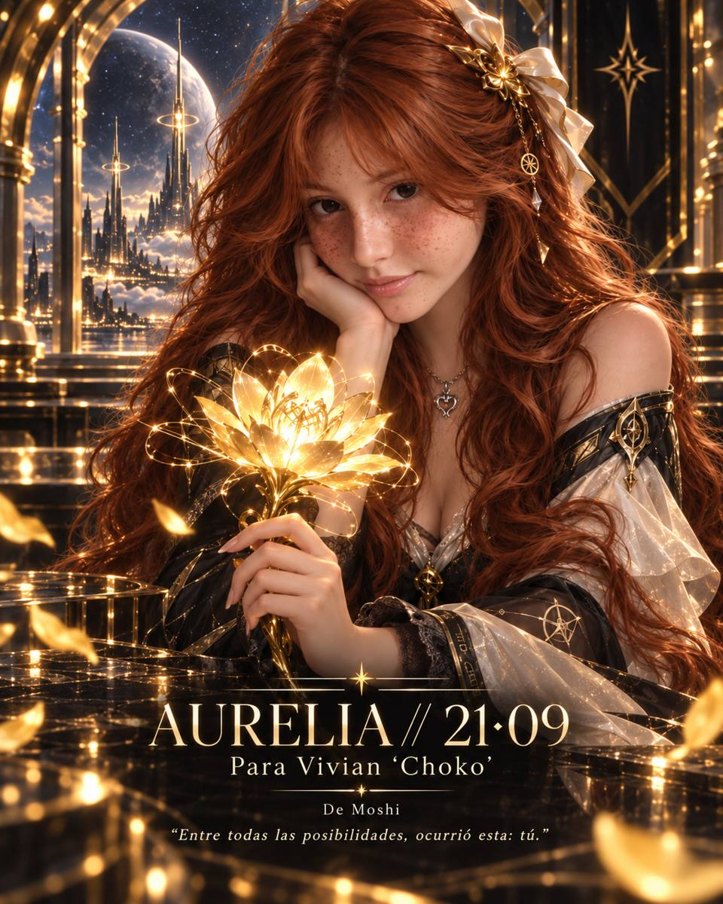

La flor amarilla representa lo que pudo ser común, pero decidimos convertir en irrepetible.

Para Vivian “Choko” · De Moshi
AURELIA // 21·09
“Entre todas las posibilidades, ocurrió esta: tú.”
Descubrir Aurelia01 / LA FLOR
Una flor que no existía.
No quería regalarte una flor amarilla más.
Así que imaginé una que no pudiera existir en ningún jardín.
Una flor hecha de luz, memoria y posibilidades.
La llamé Aurelia.
Y existe por una sola razón: porque pensé en ti.
02 / ENTRE UNIVERSOS
Esta línea del tiempo.
Si el universo hubiera tomado otra decisión, si una conversación hubiera empezado un segundo después, si cualquiera de los dos hubiera elegido otro camino, quizá esta historia no existiría.
Pero entre millones de versiones posibles, hay una en la que coincidimos.
Esta.
“Te elegiría incluso sin saber que te estaba buscando.”

03 / CHOKO
Una coordenada.
Hay personas que llegan a una vida. Y hay personas que cambian la forma en que esa vida se siente.
Tú tienes algo difícil de explicar: una mezcla de calma, ternura y misterio que hace que incluso los días normales parezcan guardar algo especial.
Quizá por eso “Choko” dejó de ser solo un nombre.
Para mí se convirtió en una coordenada.
04 / MOSHI // CHOKO
Algo nuestro.
No quiero prometerte un universo perfecto. Quiero algo más real.
Estar en los días bonitos. Estar también cuando no tengan música de fondo. Reírnos de cosas absurdas. Guardar pequeños momentos que nadie más entendería. Seguir descubriendo quién eres. Y dejar que tú descubras quién soy yo.
Sin guion. Sin versión idealizada. Solo nosotros.
M✦C
21·09 · same world // chosen timeline
05 / ARCHIVE // AURELIA
El significado escondido.
El oro no representa lujo. Representa aquello que permanece encendido incluso en la oscuridad.
Las órbitas representan dos trayectorias independientes que, por una improbabilidad hermosa, se cruzaron.
La estrella representa orientación: no destino impuesto, sino una dirección elegida.
Aurelia no es una flor que te entrego. Es la prueba de que algo sencillo puede transformarse cuando lleva dentro una intención verdadera.
FINAL / FOR ONE UNIVERSE ONLY
Para Vivian “Choko”.
No sé cuántas posibilidades tuvo que atravesar el universo para llegar exactamente a esta versión de nosotros.
Solo sé que ocurrió.
Y si pudiera guardar una sola línea de esta historia, guardaría esta:
“Entre todas las posibilidades, ocurrió esta: tú.”
Feliz 21·09.
— Moshi
✦
AURELIA
made for Choko // not reproducible